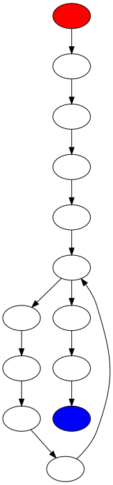
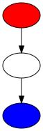
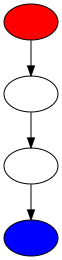
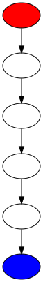
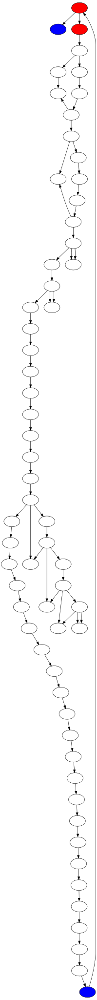
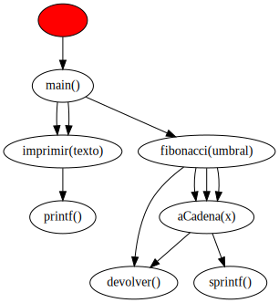

function fibonacci(umbral):cadena
- Complejidad ciclomática V(G): 0
- Puntos función: 140
- Resumen:
- Variables declaradas: 5
- Líneas de código efectivas: 10
- Número de parámetros esperados: 1
- Número de llamadas a funciones: 3
- Grafo de complejidad ciclomática:
- Grafo de llamadas a funciones:

function imprimir(texto):void
- Complejidad ciclomática V(G): 0
- Puntos función: 5
- Resumen:
- Variables declaradas: 1
- Líneas de código efectivas: 1
- Número de parámetros esperados: 1
- Número de llamadas a funciones: 1
- Grafo de complejidad ciclomática:
- Grafo de llamadas a funciones:

function aCadena(x):cadena
- Complejidad ciclomática V(G): 0
- Puntos función: 6
- Resumen:
- Variables declaradas: 1
- Líneas de código efectivas: 1
- Número de parámetros esperados: 1
- Número de llamadas a funciones: 1
- Grafo de complejidad ciclomática:
- Grafo de llamadas a funciones:

function main():void
- Complejidad ciclomática V(G): 0
- Puntos función: 14
- Resumen:
- Variables declaradas: 2
- Líneas de código efectivas: 4
- Número de parámetros esperados: 0
- Número de llamadas a funciones: 3
- Grafo de complejidad ciclomática:
- Grafo de llamadas a funciones:

PUNTOS PROGRAMA COMPLETO
- Complejidad ciclomática V(G): 0
- Puntos función: 165
- Resumen:
- Variables declaradas: 9
- Líneas de código efectivas: 16
- Número de parámetros esperados: 3
- Número de llamadas a funciones: 8
- Grafo de complejidad ciclomática:

- Grafo de llamadas a funciones:
